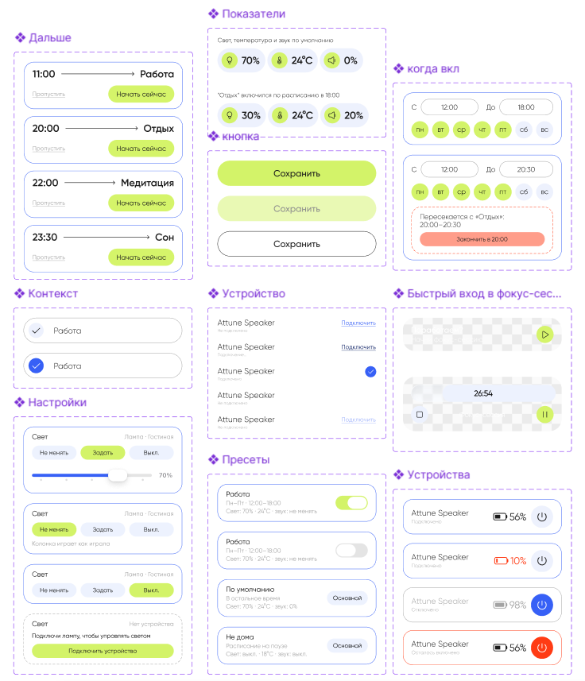
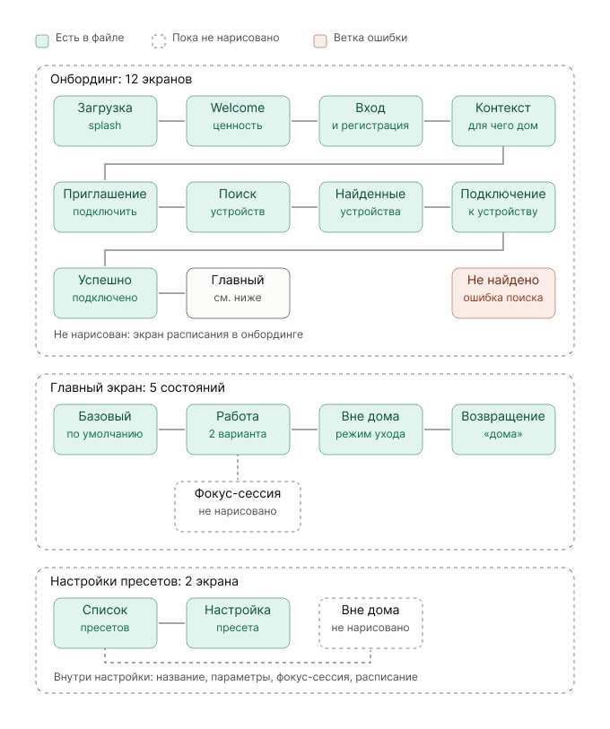

SMART HOME
Приложение для управления умным домом: UX-исследование, UI-проектирование

ЗАДАЧА
Приложения для умного дома устроены вокруг устройств: чтобы дом подстраивался под день, человеку приходится вручную собирать автоматизации по схеме «если — то». Я спроектировала Attune для тех, кто работает и отдыхает дома: пользователь выбирает, чем занят (работа, отдых, сон), а свет, температура и звук переключаются сами.
РЕШЕНИЕ
Идея продукта — сценарий вместо устройства. Пресеты запускаются по расписанию, а промежутки между ними закрывает базовый пресет. Главный экран отвечает на три вопроса: что происходит сейчас, что будет дальше и как вмешаться. Режим «Вне дома» ставит расписание на паузу, а при возвращении включает пресет, который должен действовать по расписанию.
РЕЗУЛЬТАТ
Готовы прототип онбординга с подключением устройства, главный экран в пяти состояниях и настройка пресетов с защитой от конфликтов расписания: 19 экранов и состояний. Первая версия (учебное задание) смешивала управление домом и показатели здоровья; после аудита я убрала здоровье и стрик и перестроила продукт вокруг автоматики.
Проект начался как учебное задание: красивый интерфейс без продуктовой логики. Аудит первой версии показал главные проблемы: смешались два домена (самочувствие и управление домом), показатели не влияли на устройства, не было онбординга и сценария подключения. Ограничение: параметры пресета зависят от того, какие устройства подключены (свет, климат, звук).
Провела продуктовый аудит первой версии, сформулировала JTBD: когда начинается новая часть дня, дом сам переключается в нужную атмосферу, а человек может легко вмешаться. Сравнила подход с Google Home и Яндексом, где автоматизации строятся вокруг устройств и условий.
Выстроила три сценария: онбординг с подключением устройства, автоматика на главном экране и настройка пресета. Собрала карту из 19 экранов и состояний, включая «Вне дома» и «Возвращение».
Собрала библиотеку компонентов: табы пресетов, карточки устройств и настроек, кнопки, алерты. Два акцента (синий и салатовый) работают как язык состояний: синий для активного, салатовый для главного действия.
По итогам ревью убрала метрики здоровья и стрик, заменила их статистикой фокуса и подсказкой по расписанию, добавила пресет по умолчанию, значение «Не менять», состояния «Вне дома» и «Возвращение» и защиту от конфликтов расписания.



